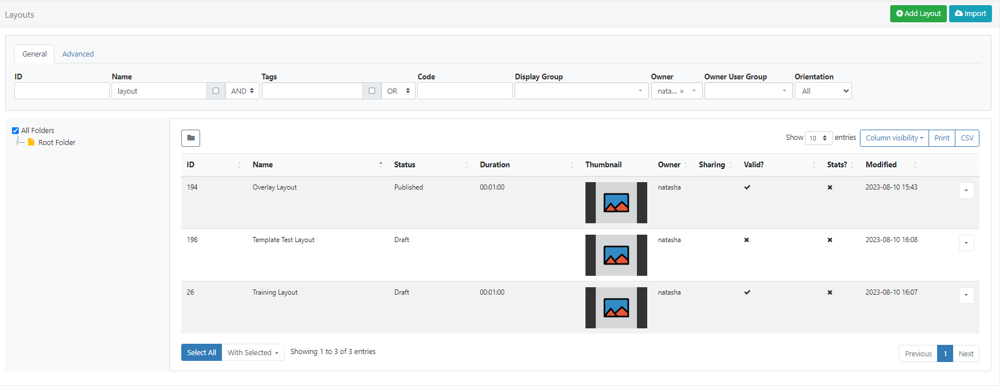

Layouts
A Layout is a complete screen design made up of content, which is then scheduled to one or multiple Displays. A Layout can contain 1 or more items of content to show using a combination of Elements, Widgets and Library Media.
To show a sequence of multiple items (such as an image slideshow) on Layouts, a Playlist is used.
BI Square Brand Activation has no limit to the number of Layouts you can have in the system or the number a User can have.
Adding Layouts
- Select Layouts under the Design section of the main CMS menu.
- Click on the Add Layout button at the top of the grid to get started creating designs using the Layout Editor.
Did you know….Layouts and Library files can be Assigned directly to a Display or Display Group so that they are always available in the local library of the Player. Useful for pre-loading a Layout ahead of time ready to be scheduled.
Resolutions
Layouts are designed for an intended display resolution and will function best when shown on a Display with a matching resolution. If they are shown on a Display that has a different resolution it will dynamically resize which may result in unused screen space.
Sending a Player a Layout that has been designed with a 4:3 resolution which is connected to a 16:9 TV screen would result in two empty bars either side of your content.
Resolutions are selected for the Layout from the Properties Panel inside the Layout Editor.
BI Square Brand Activation comes with a selection of default resolutions that cater for most digital signage applications.
Resolutions can be added/edited and enabled/disabled by an Administrator from the Resolutions page under the Design section of the main CMS menu.
Using Templates
Templates are an easy way to speed up the design process and a great way to maintain a corporate image/standard.
Templates are selected from the Toolbox inside the Layout Editor.
Selecting a Template will replace the Layout you are currently working on with your chosen Template. (This action is irreversible and so must be used with caution)
Published Layouts can also be saved as a Template!
Layout Grid
Created Layouts can be viewed from Layouts under the Design section of the main CMS menu:

Each Layout has a row menu which is used to access a menu of actions/shortcuts. This list will depend on whether the Layout is in a Draft or Published status, notable settings are listed below.
Edit will open the form to make changes to Naming, Folders, Tags etc. Use the With Selected option at the bottom of the Layout grid to edit Tag assignments in bulk!
Layouts in a Draft Status
Design - open the Layout Editor to make edits to the Layout.
Publish - Publish Now or select a future date and time to Publish.
Administrators can use the default setting on the CMS Settings page to automatically Publish draft Layouts 30 minutes after the last edit!
Discard - all changes will be discarded and the Layout will revert back to the previous Published version.
Preview Draft Layout - play a Preview of the Layout in its current Draft status.
Layouts in a Published Status
Design - open the Layout in a Read Only Mode, Checkout the Layout to enable editing.
Checkout - create a draft to make edits to the Layout.
Users can select the ‘auto submit’ check box so that this form is automatically sent each time that Checkout is selected.
Assign to Campaign - add the Layout to an existing Campaign.
Copy - create copies to easily make modifications. Choose to include all contained Media items, to use as a base for creating new Layouts to save time.
Copying a Layout will create an exact copy at the last point the Layout was Published so ensure that you Publish a Layout before making a copy to preserve any changes!
Retire - retiring a Layout will not affect existing Campaigns/Schedules associated with the Layout. A retired Layout will be hidden from new Scheduling options but will remain unaffected in existing Schedules and continue to show on Displays.
Export - include all associated Widgets/Media/DataSet structures to a ZIP file, so it can be easily shared.
When exporting a Layout, all assigned Layout, Playlist and Media Tags will be exported. Select the Import Tags option to add these Tags on Layout Import. Add the ‘Export’ Feature to allow a User/User Group to export regardless of the Share options that have been set for the Layout and its contents!
FAQ’s
When should a User create a new Layout? When should a User add to an existing Layout? Layouts provide vast flexibility in the system. The recommended usage for a Layout is for it to only contain the design and media required for a set of related content that should be scheduled at the same time.
Scenario: You have a video showing a fire safety demonstration along with with some important text and a video and images showing an advert for an upcoming production - it would be natural to have separate Layouts for these.
Are there any limits set for the amount of Layouts that can be created?
BI Square Brand Activation has no limit to the number of Layouts you can have in the system or the number a User/User Group can have.
How do I view any retired Layouts?
From the Layouts grid, use the Advanced tab and use the Retired filter. Use the row menu to unretire any Layouts.